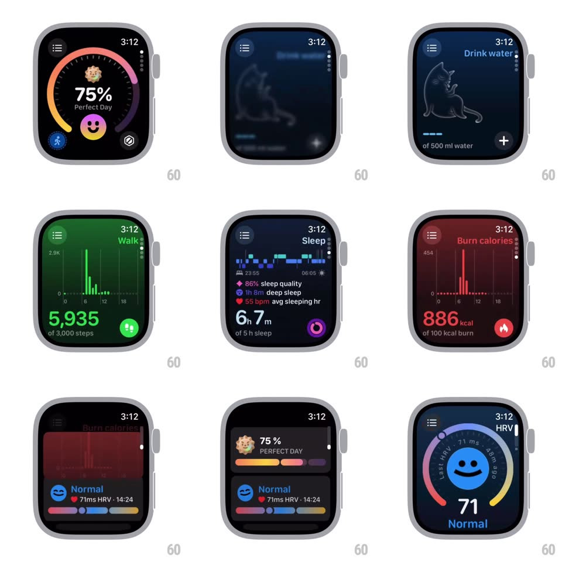

Media
Frame-by-frame

Rebuild this interaction 1:1: GrowPal's watch app - vertical scrolling between full-screen health cards (Drink water with a line-drawn cat, Burn calories with a red bar chart, HRV with a blue smiley ring), each with its own color wash, and tapping a card expands it into a detail view.

Rebuild this interaction 1:1: GrowPal's watch app - vertical scrolling between full-screen health cards (Drink water with a line-drawn cat, Burn calories with a red bar chart, HRV with a blue smiley ring), each with its own color wash, and tapping a card expands it into a detail view. ## Integration Integration: stack-agnostic spec - springs given as stiffness/damping, timed motions as duration + curve; map every value to your framework and animation library of choice. ## Scene Watch screens: "75% Perfect Day" ring home; navy "Drink water" card (line-art cat, progress dashes, "of 500 ml water", + button); deep green card; red "Burn calories" card (vertical bar chart, "886 kcal of 100 kcal burn", flame button); summary card (75% PERFECT DAY, colored progress bars, "Normal - 71ms HRV - 14:24"); HRV detail (blue smiley in a ring, "71 Normal", Last HRV 71ms / Avg 99 edge labels). ## Motion spec Pattern: paged card scroll with tap-to-expand. - Vertical drag: cards track 1:1 and page with a snap (spring ~300/26, ~300ms); each card carries a full-bleed color background that crossfades as the page turns (the next card's hue bleeds in from the edge during the drag). - Edge resistance: first/last card rubber-bands (x^0.55) and springs back. - Tap a card: it expands to fill the screen (scale 0.96 -> 1, corners 20 -> 0, spring ~280/24, ~400ms) into its detail layout - headline number counts up (500ms), supporting chart/ring draws in (700ms ease-out), action button pops last (scale 0.8 -> 1, spring ~400/20). - Detail dismiss reverses the expansion; the underlying card list is blurred + dimmed behind. - The HRV ring's edge labels tick along the arc as it draws. ## Calibration - Each card's accent color (navy, green, red, blue) is its identity - the page tint and the chart share it. - The hamburger menu icon and page dots stay pinned through scrolls. ## Reduced motion Cards crossfade between pages; details fade in over the dimmed list. ## Don't miss - The cat illustration is a thin single-weight line drawing that animates a subtle tail/stroke wiggle on the water card. - The summary card compresses TWO metrics (Perfect Day ring + HRV row) - it is a composed recap, not a single gauge.